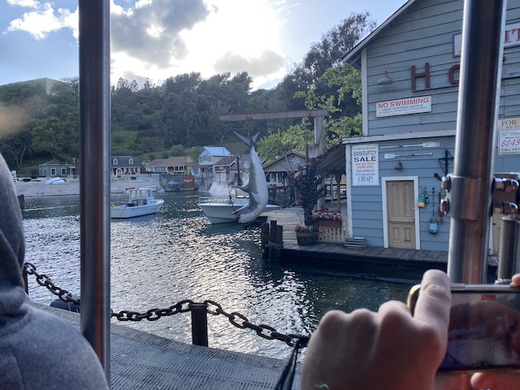
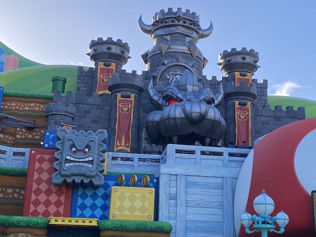

| |
Nintendo World Opening
All right. So we're here at Universal Studios Hollywood for one main reason today.
Yep. We're here for Nintendo World since....that was the catalyst for us returning to Universal Studios Hollywood. This also essentially our only update for 2023 as....that year was a sh*tshow of a year. Aside from this, all I did were some SFMM visits that won't be an update since....there's literally nothing new to report on, as well as a KBF visit right at the very end of the year that'll have a few photos from then get lumped in with the (for sure happening) Boysenberry Festival 2024 Update. So yeah. This'll be the one update of 2023, and be a spiritual successor to The 2020 Update (Speaking of 2020, 2023 was VERY similar despite the lack of a pandemic. If anything, I'd call 2023 worse).
 Oh yeah. We took public transportation to get here since....I am NOT paying over $30 to park! F*CK THAT!!! I'll just spend $10 on public transportation (possibly less).
Oh yeah. We took public transportation to get here since....I am NOT paying over $30 to park! F*CK THAT!!! I'll just spend $10 on public transportation (possibly less).
First things first was a group lunch at the Toothsome Chocolate Emporium (thanks Evan).
Despite the name, this is not a big chocolate resteraunt. They served pretty good food.
Jason is ready for Nintendo World with his Power-Up Band. =)
OK. Fine. Their dessert menu was pretty kick ass. That "May Contain Nuts" sundae was REALLY good.
And of course, the atmosphere of the resteraunt is pretty cool as well.
Honestly, I can buy Nintendo merchandise at a place like Target (I'm wearing one from there today BTW. Check for yourself in the photos of me in this update) or on Amazon for a fraction of the price. Just a quick little financial tip for you Nintendo fans. ;)
It's pretty cool to see some movie props here.
The statue isn't lying. Alfred Hitchcock really is one of the greatest directors of all time. I LOVE (most of) his films. =)
Hmm. I didn't think that Scooby Doo was a Universal property. Didn't expect to find the Scooby gang here.
Yeah. No fastpass today. This is solely a Nintendo World day. We'll be back for a full proper visit to Universal Studios Hollywood soon.
You can tell its for girls because its pink (I still have yet to see a Despicable Me movie, and I hope to keep it that way for the forseeable future).
Yeah. This visit was just for Nintendo World. I had hoped to come back and have a full proper visit in the summer. But yeah. That never happened.
For all you movie nerds who want to know the ins and outs of special effects, this is for you. =)
Not only does this not fit due to Simpsons....being Disney (I still reject this, no matter how many sh*tty Disney+ shorts Disney pumps out with the Simpsons to try and convince me otherwise), but also....Apu is no longer politically correct (that was....an interesting documentary to say the least).
The list of jobs I've had continues to grow as now I can put police officer on the list. =P
OK. Time for the one ride we're riding here that's not part of Nintendo World.
Yeah. The movie nerd in me just has to do this. It is too iconic (BY FAR the most notable ride here).
 I forget which movies they mentioned this being part of due to how late this update is (Good news. This is the last postponed update. Updates should be posted shortly after they occur now). But this is a very common shooting spot.
I forget which movies they mentioned this being part of due to how late this update is (Good news. This is the last postponed update. Updates should be posted shortly after they occur now). But this is a very common shooting spot.
"Hey you! Guy with long blonde hair! Get back on set and give me my f*cking coffee!!!"
So within the Studio Tour, they have the King Kong: 360 3-D. It says it opened in 2010. But....I don't ever remember it during previous times I did the Studio Tour (though I apparently acknowledged it when I last did the full Studio Tour in 2011. So I guess I just forgot about it).
This basically...was a simulator within the Studio Tour. But hey. It had a lot of cool special effects. And I will admit. It did feel REALLY cool to have your basic tram essentially turn into a ride. Thumbs up for that. =)

No. They don't include a Jaws ride on the Studio Tour like they do with King Kong. You'll have to go to Japan if you want to ride Jaws.
And luckily, our studio tour went perfectly. Other groups weren't so lucky.
 Hey look! Another place to spend money that'd be spent better on so many different things (both serious adult stuff as well as fun recreational stuff) to get random crap you'll stop caring about and donate to Goodwill!
Hey look! Another place to spend money that'd be spent better on so many different things (both serious adult stuff as well as fun recreational stuff) to get random crap you'll stop caring about and donate to Goodwill!
The time has come to finally check out Super Nintendo World.
Super Nintendo World now loading.

Much like how the Wizarding World of Harry Potter makes Harry Potter nerds cum and how Galaxy's Edge makes Star Wars nerds cum, it's now time for the Nintendo nerds to cum.
Time to make our reservation for Mario Kart: Bowser's Challenge. Cause....I REALLY want to ride this ride today.
California doesn't get earthquakes. Someone just keeps hitting the POW button. ;)
I found one of the keys necessary for fighting Bowser Jr!
Ooh! I wonder what's inside this Mystery Block?
"OH SH*T!!! My partner for this game is a lying thieving c*nt!? I'm doomed!!"
So the primary resteraunt of Nintendo World is the Toadstool Cafe. Never ate there, but their menu....it looks good. But not great. Not super high on my resteraunt priority list. I'd rather go back to the Toothsome Chocolate Emporium it appears.
"Hey! Why does Mario get all the fame and love!? Where's the love for poor old Luigi!?" =(
Something about Princess Peach in stained glass window form just looks really cool.
Hmm. I know this land just opened up. But....I think there might be a problem with your flowers. Just letting you know.
Yeah. Time to ride Mario Kart: Bowser's Challenge. And in the fastpass line, you're greeted with a giant stone statue of Bowser. I see someone is a narcassist who thinks too highly of himself. ;)
 "I'M GOING TO WIN ALL THE CUPS MOTHERF*CKERS!!!"
"I'M GOING TO WIN ALL THE CUPS MOTHERF*CKERS!!!"
Good to see such mortal enemies coming together for a photo.
*Sigh* I remember when I was good at Mario Kart and could easily do Rainbow Road without falling off once. Now....that's not the case. I want to start playing the game again. But not only do I not have the time to play, but I don't even have the time to get my game system set up. I'm just too busy for video games. Haven't had that sort of time for that since the COVID lockdowns.
How to not get eaten by a flower.
 Those are Bowser's minions? Yeah. I can EASILY beat this bastard. =)
Those are Bowser's minions? Yeah. I can EASILY beat this bastard. =)
Tune into MKTV to see me win this cup. =)
 Yeah. It's time to suit up for this race.
Yeah. It's time to suit up for this race.
So yeah. Mario Kart: Bowser's Challenge is a really intersting ride.
It's A LOT of fun and really cool to be doing an actual Mario Kart game. However, it honestly was pretty confusing. For like half of the ride, I was trying to figure out "How the hell does this visor work? How do I steer? What's going on?". So I think that confusion made it not quite as good as I was hoping. Yeah. Unlike Rise of the Resistance, this won't be making the Top 10 Dark Rides List. But honestly, I could see myself enjoying this a lot more on a reride when I understand the rules more and honestly, I think playing more Mario Kart before my next visit will increase my enjoyment of this ride.
And finally, we end the day with a quick game of Koopa Trooper Power Punch before rushing back to make our train home.
And that was our visit for Nintendo World. I really enjoyed the new area and had a blast. I only wish I was able to get a full proper visit to Universal Studios Hollywood in 2023. I would say I'm coming for a proper visit in 2024. However, with what they announced for 2025, HOLY SH*T!!! I AM WAITING TILL THEN TO COME BACK!!! I know they officially announced a new Fast and Furious coaster. But the details have been pretty fuzzy. However, if the animated POV guess of Amusement Insider is what they're doing, this'll rival X2 and Twisted Collosus as one of the best coasters in California. YES!!! THIS THE TYPE OF RIDE I'VE BEEN DREAMING THAT USH WOULD ADD FOR DECADES!!! Hell, if they add spinning cars similar to those on Time Traveler and Ride to Happiness as some have speculated, that would possibly make it one of the best coasters on the planet! Yeah. I will 99.99% be back in 2025 barring some major freak accident, and I am so looking foreward to this! =)
Home
|